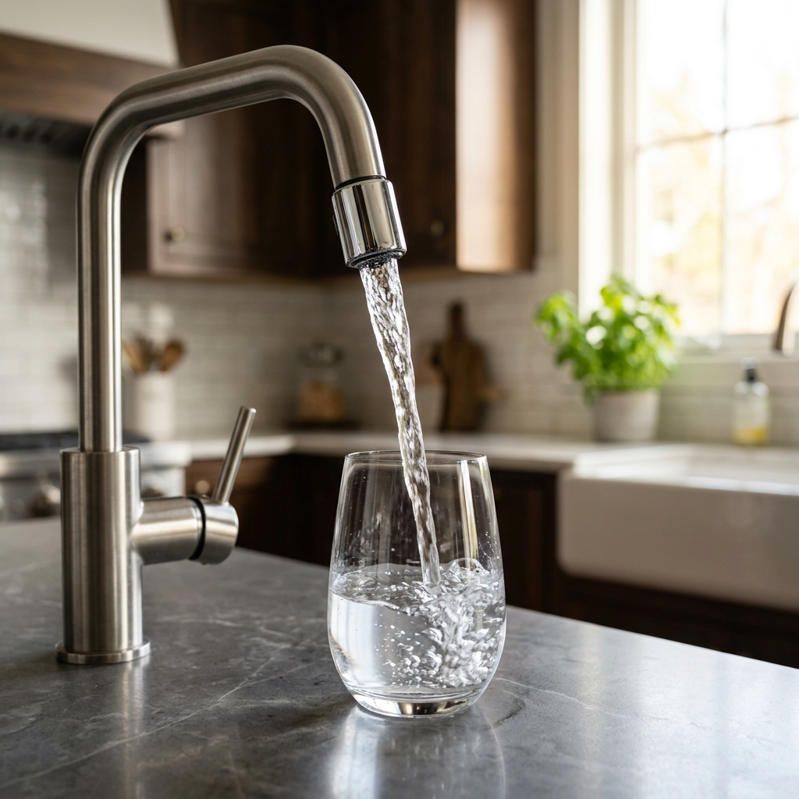
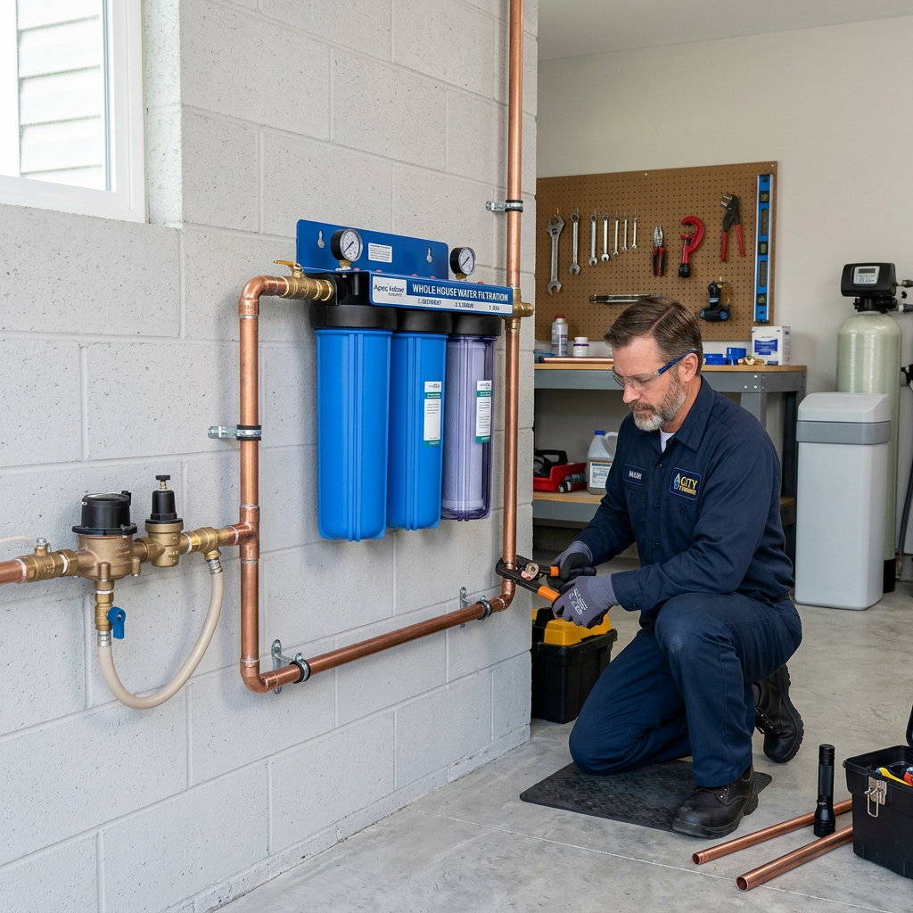
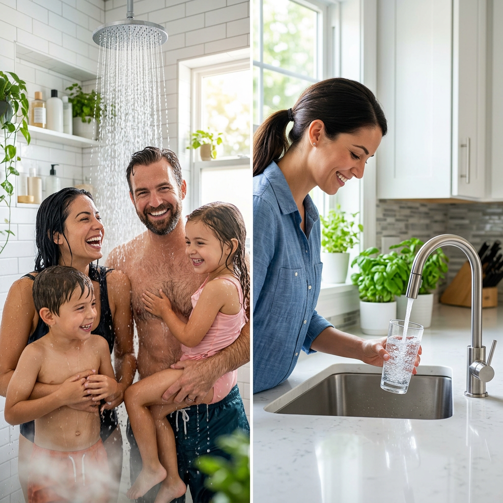

Best 3-Stage Water Filters of 2024: Whole House vs. Under-Sink Comparison
Why Your 'Clean' Tap Water is Failing Your Family
You turn on the tap, and it looks clear. But behind that transparency lies a cocktail of chlorine, heavy metals, and sediment that is slowly wrecking your health, your skin, and your expensive appliances. If you’ve noticed a metallic aftertaste, a 'swimming pool' smell, or white scale buildup on your faucets, your current filtration is failing you.
A 3-stage water filter is the industry standard for a reason. It doesn’t just 'sift' water; it systematically strips away contaminants through targeted layers of protection. But the real question is: Do you need to protect every tap in your home, or do you just want the purest glass of water imaginable at your kitchen sink?

| Product Name | Primary Use Case | Filtration Precision | Verdict |
|---|---|---|---|
| Waterdrop 3-Stage Whole House Filtration System | Whole Home Protection | 5 Micron | Best for protecting appliances and skin |
| Waterdrop Under-Sink 3-Stage System | Drinking & Cooking | 0.5 Micron | Best for bottled-quality taste and purity |
The Power of Three: Why Three Stages Matter
One stage isn't enough to handle the complexity of modern municipal water. A professional 3-stage system works like a security team:
- Stage 1 (The Guard): A sediment filter catches rust, sand, and silt that clog your pipes.
- Stage 2 (The Refiner): Activated carbon blocks neutralize chlorine odors and bad tastes.
- Stage 3 (The Specialist): Specialized media (like KDF or Fluoride-specific filters) targets heavy metals and microscopic impurities.
Deep Dive: Waterdrop 3-Stage Whole House Filtration System
If you are tired of dry, itchy skin after a shower or seeing your dishwasher break down due to sediment buildup, the Waterdrop Whole House System is your solution. This is a heavy-duty 'Point of Entry' system that treats every drop of water before it enters your pipes.
Key Benefits:
- Massive Flow Rate: Engineered to provide up to 15 gallons per minute, meaning you won't see a drop in water pressure even with two showers running.
- Appliance Longevity: By removing sediment and scale-inducing minerals, you extend the life of your water heater, washing machine, and coffee makers.
- Skin and Hair Health: Removing chlorine at the source means softer hair and less irritation for sensitive skin.

Deep Dive: Waterdrop Under-Sink 3-Stage System
For those who want the absolute highest standard of drinking water without the 'bottled water' price tag, the Waterdrop Under-Sink 3-Stage System is the gold standard. While the whole-house system focuses on volume, this system focuses on precision.
Key Benefits:
- Ultra-High Precision: With a 0.5-micron filtration capability, it captures contaminants that larger filters miss, including lead and cysts.
- 3-Minute DIY Install: No plumber required. The push-to-connect fittings mean you can have crisp, clean water in the time it takes to make a sandwich.
- Compact Efficiency: It tucks neatly under your sink, leaving plenty of room for your cleaning supplies.
The Verdict: Which 3-Stage Water Filter Should You Choose?
Choosing between these two depends entirely on your 'Pain Points':
- Choose the Whole House System if: You are worried about plumbing health, scale buildup, and the quality of your shower water. It is the ultimate 'set it and forget it' insurance policy for your home.
- Choose the Under-Sink System if: Your primary concern is the taste and safety of your drinking and cooking water. It offers a higher level of filtration for pennies on the gallon compared to bottled water.
Pro-Tip: Many high-intent homeowners actually use both. The whole house system acts as a pre-filter for the entire property, while the under-sink system provides that final 'polishing' for the perfect glass of water.

Stop Settling for Subpar Water
Water quality isn't just about taste—it's about the long-term health of your family and your home. Whether you need the brute force of a whole-house system or the surgical precision of an under-sink filter, Waterdrop provides the reliability and NSF-certified performance you deserve.
Check Price on Official Store